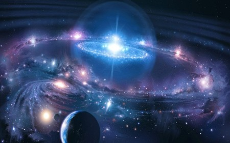

En el universo todavía existen cosas que no descubrimos, de hecho, solo hemos descubierto solo una parte pequeña de este, mientras que el resto espera ser buscado. En esta ocasión vamos a ver una teoría demasiado interesante, que es la del universo, y como podría cambiar nuestra perspectiva del universo y de la realidad misma si esta tería fuera cierta, ¡acompañame a ver esta interesante teoría!
Para empezar, ¿Qué es el multiverso?
Es un término usado para definir el conjunto de los muchos universos existentes, según las hipótesis que afirman que existen universos diferentes del nuestro propio.
Se podría decir que es una hipótesis que dice que podrían existir muchas versiones de nuestro, cada uno con sus respectivas reglas que lo hacen diferente al resto, y la verdad que sería interesante verse como es en otro universo, eso si, si es que existimos. Pero el inconveniente es que no se sabe si realmente existen y actualmente en el año 2021 (año que fue hecho esta página) no se sabe si podría existir uno y son puras hipótesis

Entonces, ¿Qué pasaría si existiera el multiverso?
Para empezar, tendríamos que tener la tecnología suficiente para poder saber si existe aunque sea un universo paralelo, una vez descubierto que SI existe un multiverso se podrían investigar algunos de estos para ver las propiedades que estos tienen, pero en caso de que NO exista seguramente va a llevar a más de uno en una decepción. Pero mejor sigamos hablando de lo que pasaría si existieran. También podría ser posible recoger recursos de esos universos, solo si es que en el planeta tierra no existieran los humanos, u otro planeta en donde podamos obtener más recursos facilmente.
Peligros de viajar en multiversos
Muy maravilloso sería visitar esos universos, pero, algo que tomar en cuenta son los problemas que habría al irse a vivir a uno, ya que no sabemos con certeza las leyes de cada universo y su historia, por ejemplo, si logramos encontrar un universo en donde la tierra fue invadida por una especie extraterrestre, es posible que si descubren que existen más universos quieran conquistar más planetas, y si en especial nos encuentran a nosotros entrando en aquel universo, lo mejor que podríamos hacer es no volver a ese universo y esperar a que NUNCA lo descubran. Suena como ciencia ficción, pero es muy probable que pasen ese tipo de cosas.
Y, ¿Cómo podríamos viajar a otros universos?
Aunque actualmente todavía no se sabe realmente como podríamos viajar entre universos, se dice que se podria mediante los agujeros negros, aunque es solamente pura hipótesis, y lo más seguro es que cuando algo es atrapado por un agujero negro es desgarrado hasta el último átomo, significando que después de que el objeto haya sido absorvido por el agujero negro no vaya a ninguna parte, aunque sea no a otro universo, significando que todavía no sabemos a ciencia cierta como podríamos viajar a otros universos, ni si existe realmente el multiverso.
Eso seria todo por hoy, ¡Espero que les haya gustado este articulo!
Hecho por: Alan Serrano